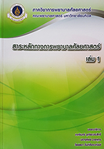
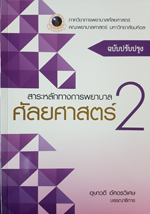
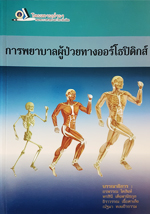
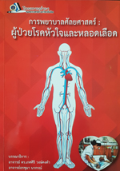

 |
สาระหลักทางการพยาบาลศัลยศาสตร์ เล่ม 1 โดย เกศรินทร์ อุทริยะประสิทธิ์ |
 |
สาระหลักทางการพยาบาลศัลยศาสตร์ เล่ม 2 โดย เกศรินทร์ อุทริยะประสิทธิ์ |
 |
การพยาบาลผู้ป่วยศัลยกรรมระบบทางเดินปัสสาวะ โดย วันเพ็ญ ภิญโญภาสกุล |
 |
การดูแลผู้ป่วยที่มีแผล อุปกรณ์ขับถ่ายหน้าท้อง และการขับถ่ายปัสสาวะลำบาก โดย อุษาวดี อัศดรวิเศษ |